Inicio
Abrir en vivo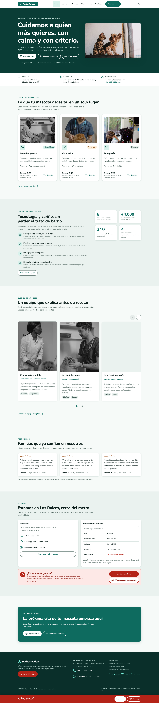
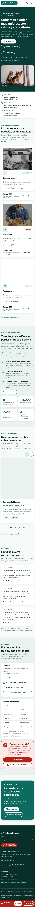
Documentación del proyecto
Todas las pantallas finales, lado a lado en escritorio y móvil. Cada miniatura abre la captura completa; cada tarjeta enlaza a la página viva. Los pasos 2, 3 y la confirmación necesitan un borrador de reserva, así que su enlace puede redirigir al paso 1.
13 pantallas a 1440 y 390 px. Las capturas son de página completa; aquí se muestra el inicio de cada una.


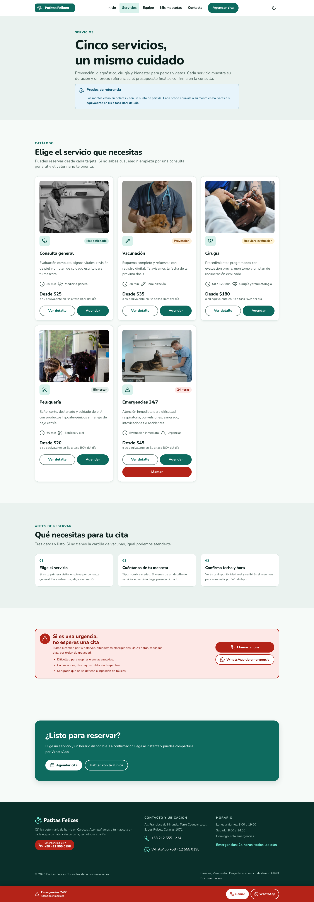

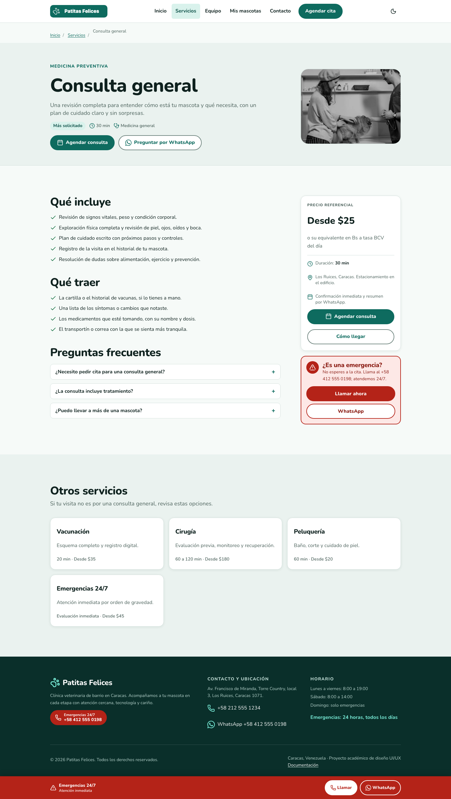
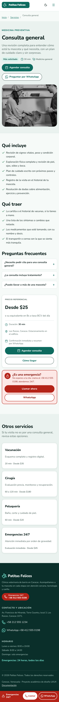
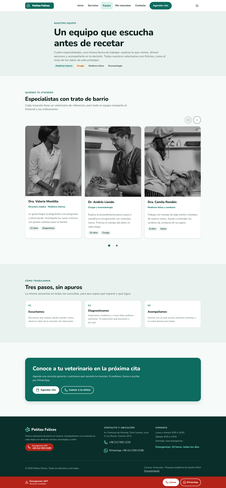
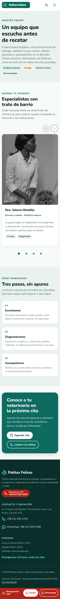
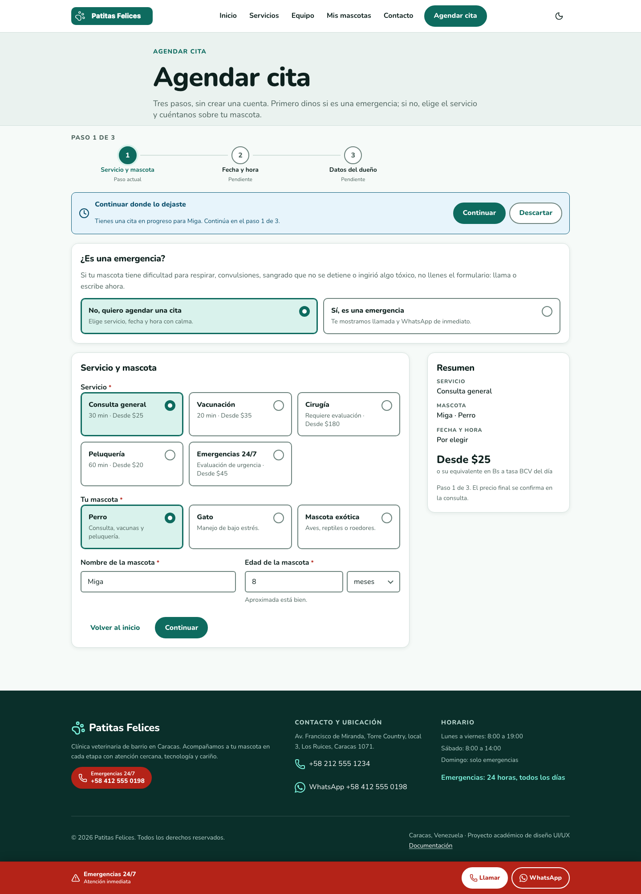

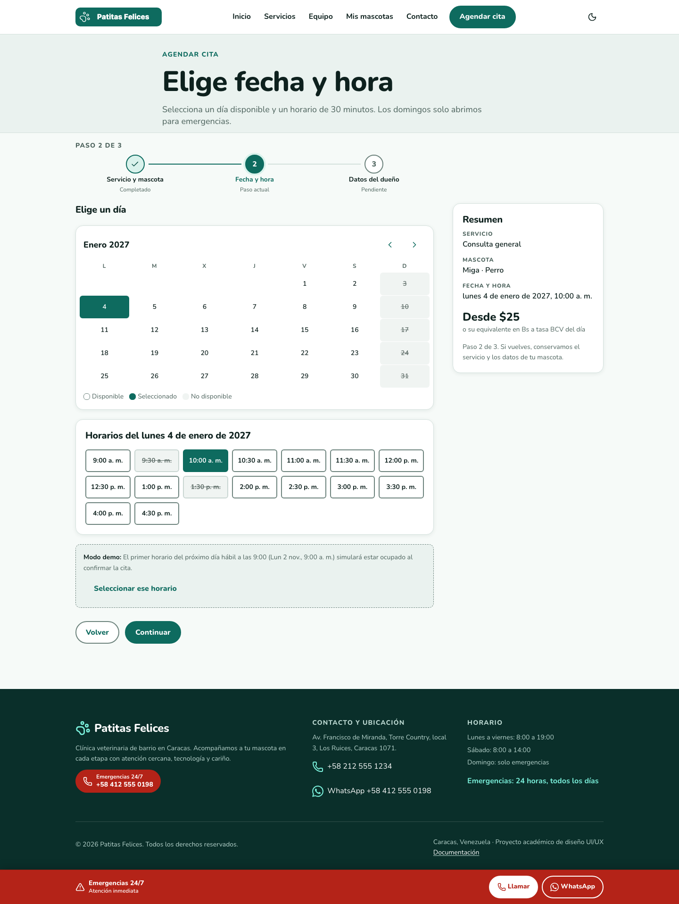

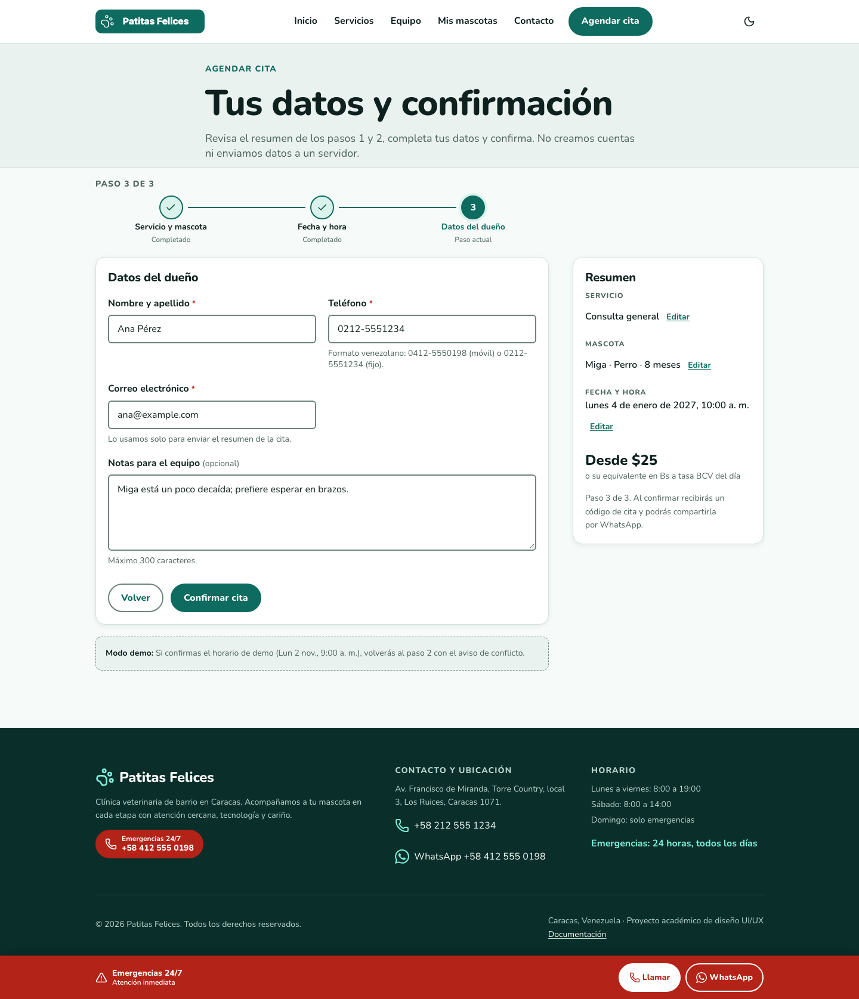
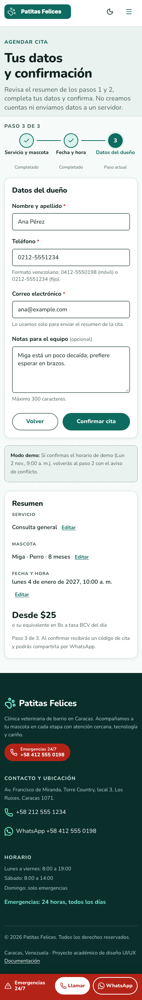
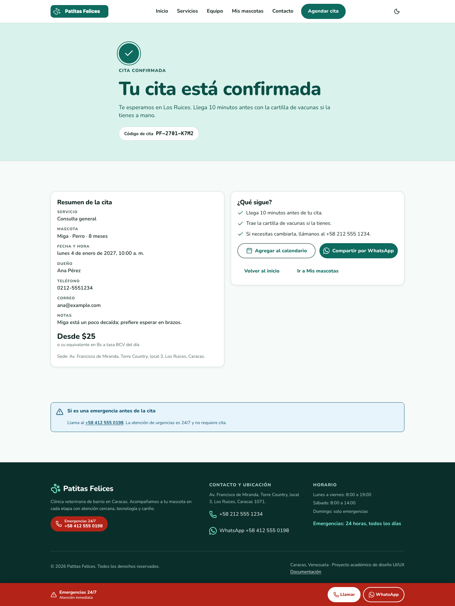
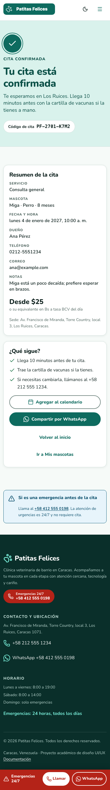
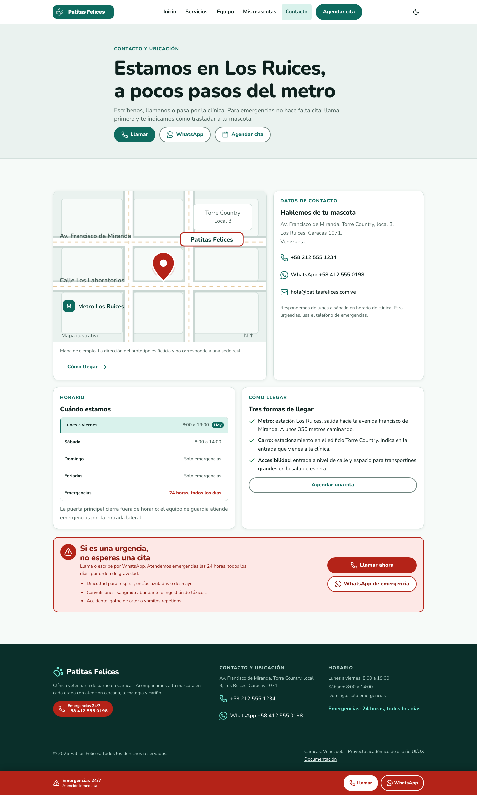
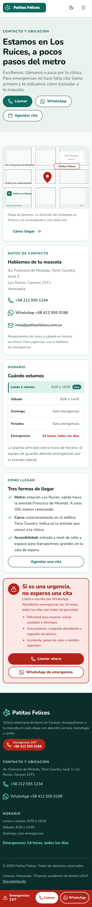
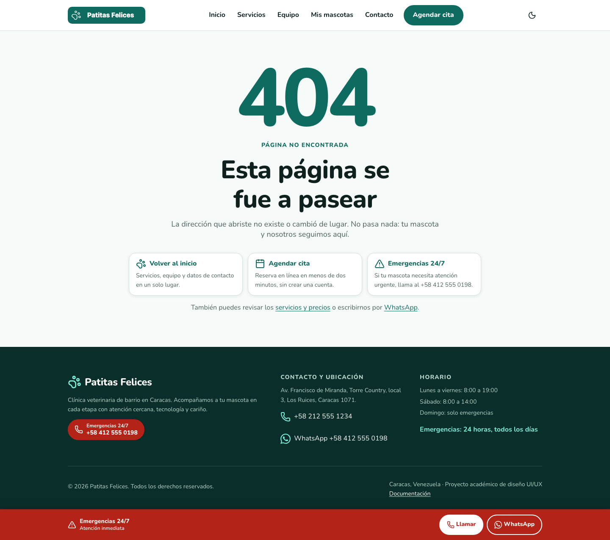
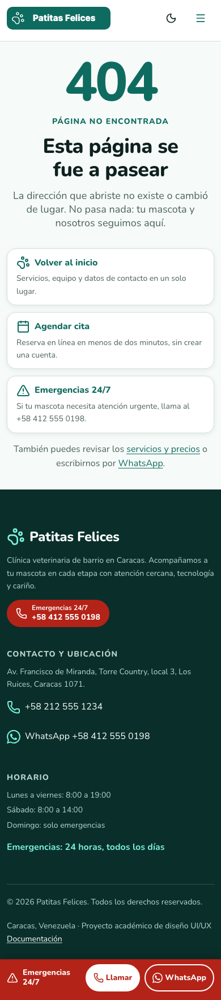
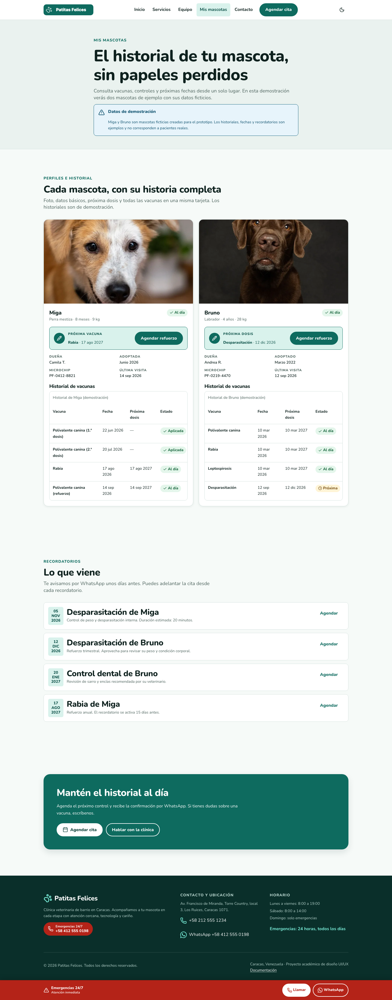
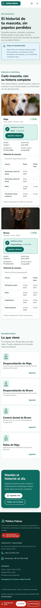
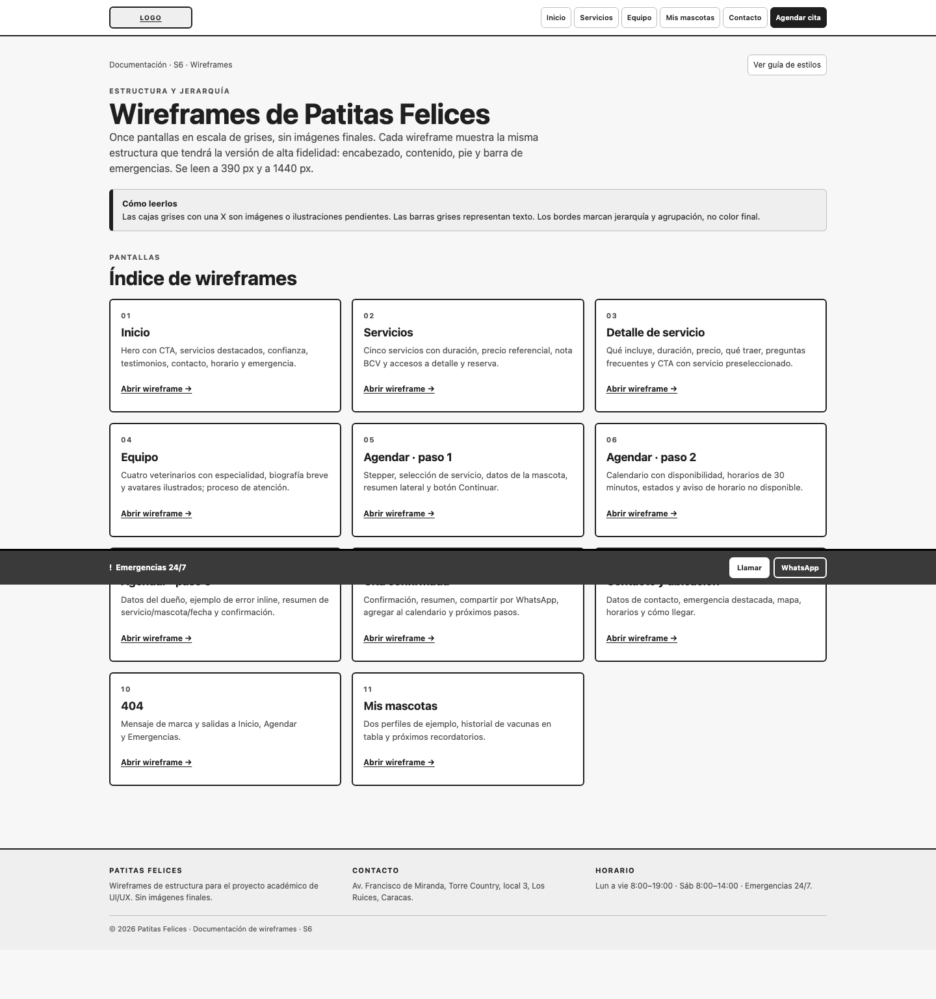
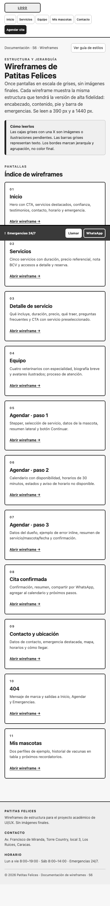
Inicio, Servicios y Cita confirmada en ambos anchos. El tema se guarda en el navegador y respeta la preferencia del sistema.
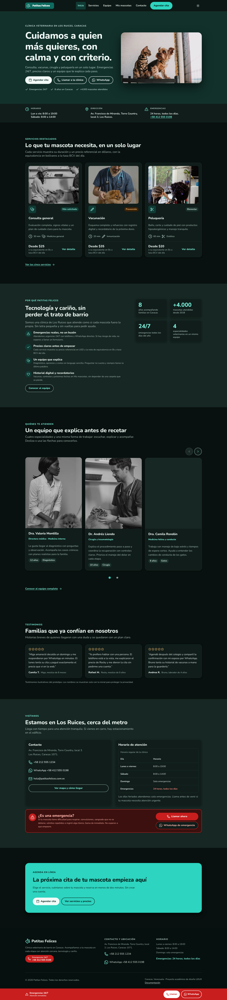
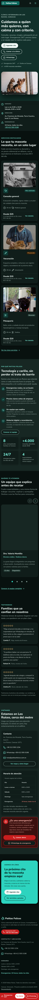
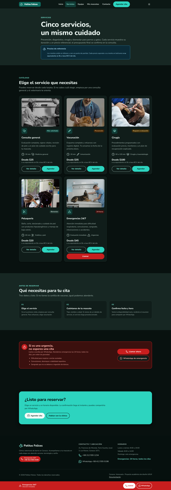
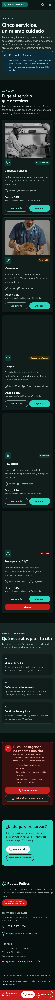
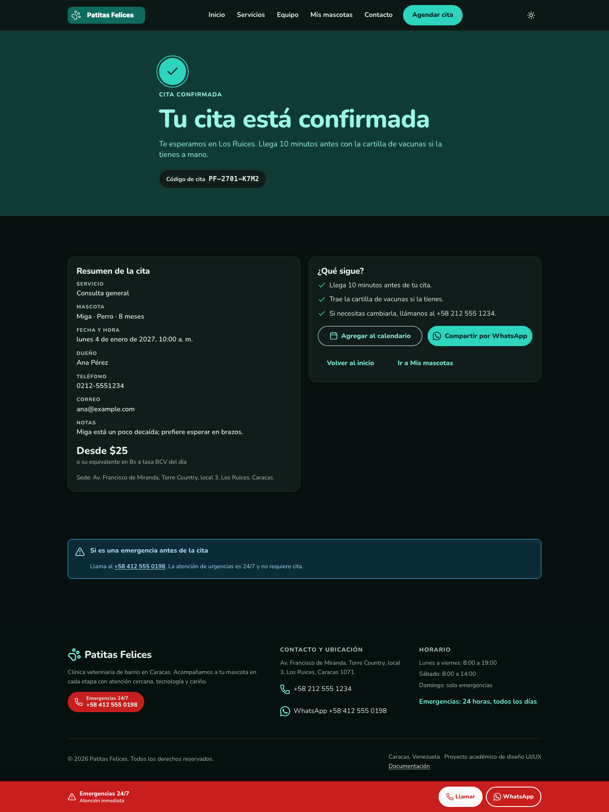
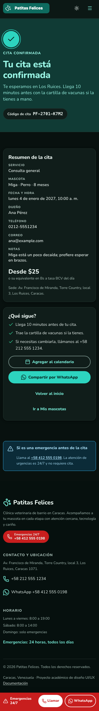